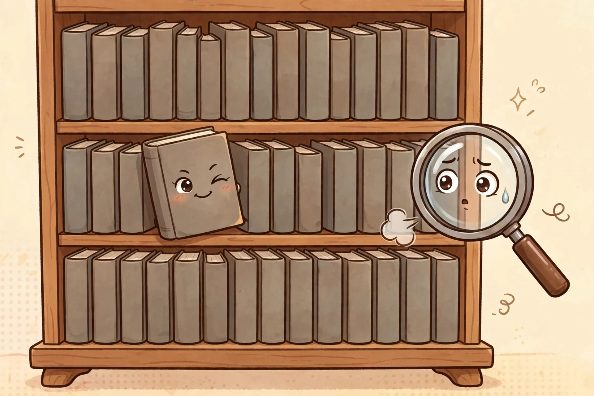

The Hollowed-Book Safe: A Textbook's Secret Second Career
The internet is full of guides to making a hollowed-out book safe, and every single one assumes you are working with a novel. This is a strategic error. A novel is a book someone might pick up. A doorstop-thick calculus textbook is a book nobody has voluntarily opened since 2019, including its owner. The best lock on a hiding spot is other people's complete disinterest — and no book on Earth generates disinterest like a textbook.
Textbook vs. novel: the comparison
| Textbook | Novel | |
|---|---|---|
| Thickness | Enormous — deep compartments possible | Modest — shallow tray at best |
| Camouflage | Nobody opens it voluntarily; perfect | Someone might actually read it; risky |
| Page behavior | Thick coated stock cuts cleanly in stacks | Thin pages tear and feather |
| Weight | Feels substantial — never suspected of being hollow | Feels suspiciously light once hollowed |
| Availability | You already own several; resale value is nil | You would have to sacrifice a good book |
The textbook wins on every axis that matters. This was never a fair fight.
Choosing your victim
Pick the thickest hardcover with the dullest spine. "Advanced Econometrics" beats "Introduction to Psychology" — the more specialized the title, the fewer humans will touch it. The book should be one you own outright, will never sell, and have fully emotionally detached from. Do not use a borrowed book, a library book, or a book with sentimental value. The fines and the guilt both compound.
The method
Step 1: Reserve the front pages. Flip past the first 5 to 20 pages — title page, copyright page, the table of contents nobody read. These stay intact so the book still looks like a book if anyone opens the cover. Wrap these pages, plus the inside of the front cover, in plastic wrap or cling film so glue cannot reach them.
Step 2: Glue the page block. Brush decoupage medium (Mod Podge or equivalent) along the three outer edges of the remaining page block — top, bottom, and fore-edge. Give it two to three coats, saturating the edges. Close the book, set something heavy on top, and let it dry 15 to 30 minutes. The medium dries clear.
Step 3: Mark the compartment. Open to the first glued page. With a pencil and ruler, draw your rectangle: leave at least a half-inch border on all sides (a full inch is safer against tears). On a textbook you can go deep — plan to cut about three-quarters of the way through the glued pages, and leave the last 20 pages solid at the back. Optional: drill a small hole in each corner to the planned depth to make the corner cuts easier — drill slowly.
Step 4: Cut a few pages at a time. With a sharp craft knife and a metal ruler, cut along your lines, pressing firmly, removing only a few pages per pass. Take the cut pages out as you go. This is the long step — expect the better part of an hour for a deep textbook compartment. Put on something to listen to. Rushing this step is how you get ragged edges and bandaged fingers.
Step 5: Seal the interior. Once you reach your depth, brush the medium along the cut interior walls and let it dry completely. This stiffens the compartment and keeps pages from fraying.
Step 6: The clean finish. Take one of your reserved front pages, glue it over the cut opening, let it set, then carefully cut the rectangle out of that page too. This hides the ragged first cuts behind a crisp frame. Shelve the book spine-out among its boring friends.

What success looks like
Success is a book that opens to reveal a clean rectangular compartment with stiff walls, closes flat, sits on the shelf indistinguishable from its neighbors, and has never once tempted anyone to open it for its actual contents. Test it: hand it to a friend and ask them to find the compartment. If they open it, flip past the title page, and immediately lose interest — the camouflage is working exactly as designed.
The supplies cost
Prices checked October 10, 2026: an 8 oz jar of Mod Podge Satin listed at $10.25 CAD (in stock), and an X-ACTO Z Series precision knife with a No. 11 blade on sale at $12.05 CAD (listed against $13.39 CAD). Add a ruler and pencil from the junk drawer, and the whole project lands around $22 CAD — plus the textbook, which cost you hundreds of dollars in tuition and is now finally earning its keep.
Honesty corner
Two honest notes. First: a hollowed textbook hides things from casual snoops — roommates, relatives, the curious. It will not stop a determined thief, a landlord with a key, or anyone who has read this article. Treat it as privacy theater, not a vault. Second: craft knives are genuinely sharp. Cut away from your body, keep fingers behind the ruler's edge, and never rush step 4. The compartment can wait; your fingers cannot be re-glued with Mod Podge.